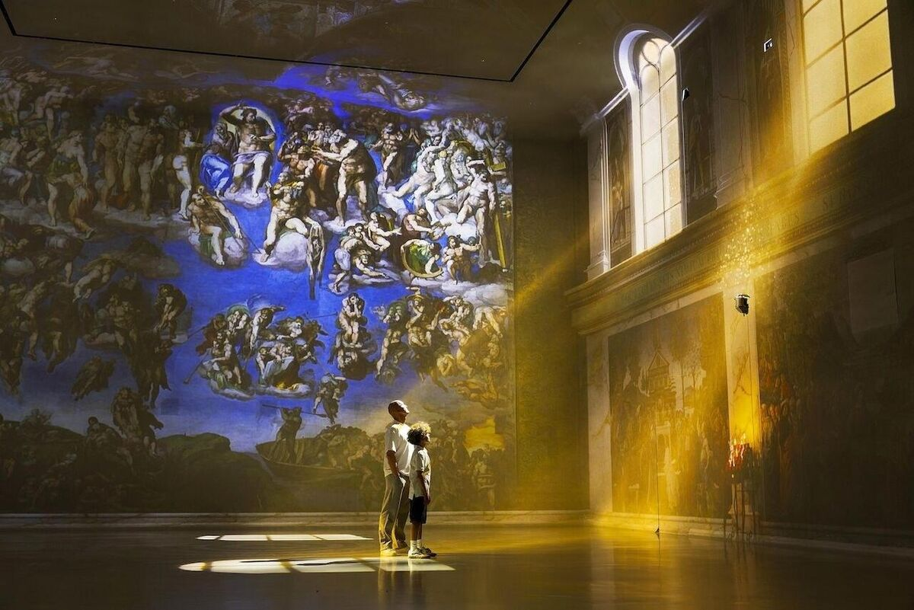
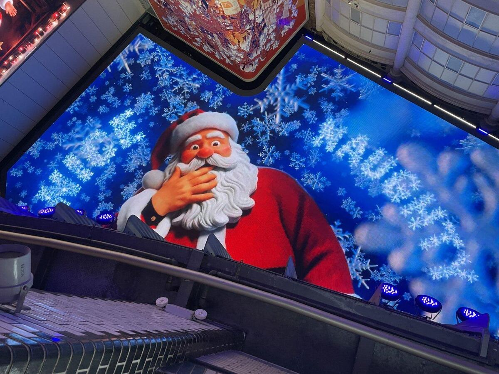
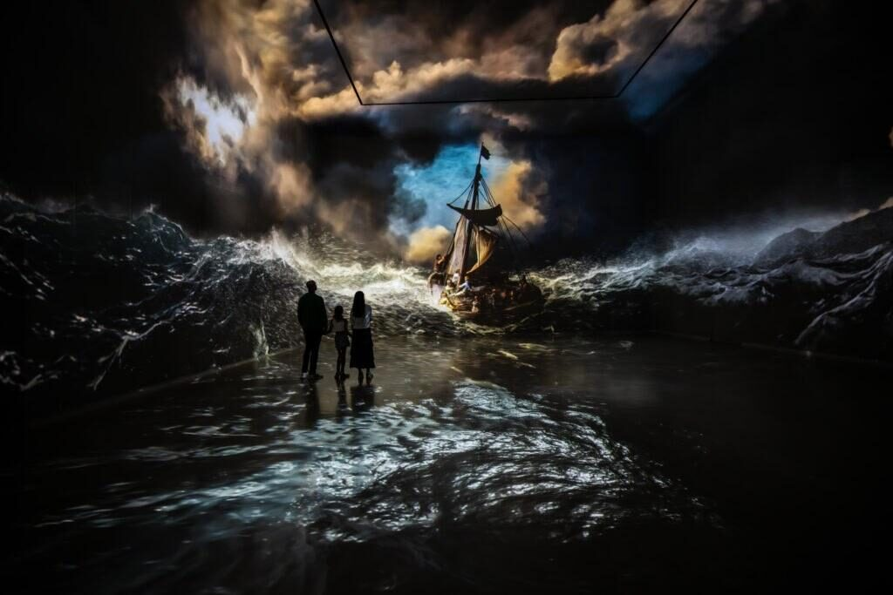

Selected Work
XR production coordinator at Cinesite since December 2024, after two years in VFX production on film and TV.
Immersive & XR
01
Immersive Experience · FRAMELESS London · 2026
The Sistine Chapel, Reimagined
XR Coordinator, Cinesite Immersive
Michelangelo's frescoes reimagined at gallery scale with cinematic VFX, animation and an original score. I managed scoping, creative management, budgeting and scheduling, drove the project through to delivery, and coordinated on-site testing at the venue.
View experience →

02
AI-Enabled XR · Printworks Manchester · 2025–26
Printworks Christmas Campaign
XR Coordinator, Cinesite Immersive
A personalised, animated Christmas campaign across Europe's largest LED ceiling, and the first AI-generated content played in the venue. With a fraction of a typical VFX budget and only weeks to deliver, the team used a hybrid generative AI and traditional VFX pipeline. I managed scoping, budget, scheduling and delivery of the AI-generated content, coordinated the data delivery schedule, and troubleshot the venue's local cache rollout to hit the seasonal deadline.
View case study →

03
Immersive Experience · FRAMELESS × National Portrait Gallery · 2025–26
Stories — Brought to Life
XR Coordinator, Cinesite Immersive
An immersive experience that lets visitors step inside the stories behind five iconic portraits, including Queen Elizabeth II, Nelson Mandela and Amy Winehouse. It opened at MediaCity, Greater Manchester in May 2025, then as a residency at FRAMELESS London in May 2026. I helped manage artist schedules and deadlines, and coordinated the London launch on site: scheduling checks and liaising between the production and venue teams.
View case study →
04
Immersive Gallery · FRAMELESS London
FRAMELESS Galleries
XR Coordinator, Cinesite Immersive
Cinesite is the production partner for FRAMELESS, the UK's largest immersive art experience, building cinematic worlds from works by artists such as Rembrandt, Van Gogh and Dalí across four galleries. I ran the day-to-day schedule for the artists making the content, and supported the live Unreal Engine build: coordinating on-site testing and the communication between engineering and creative teams.
View case study →

Film & TV VFX
05
Feature Film · A24 / DNA Films · 2024
Warfare
VFX Production Coordinator, Cinesite
One of the first films to use AI retiming. I coordinated the cross-department workflow built around the new retiming pipeline, so shots met the distributor's creative and technical specs.
View on IMDb →
06
Series · Netflix
Kaos
VFX Coordination
Coordinated VFX delivery, finding and fixing workflow bottlenecks between creative departments.
View on IMDb →
07
Series · HBO
True Detective: Night Country
VFX Production Coordinator, Cinesite
Handled delivery scheduling and artist capacity planning through to final delivery.
View on IMDb →
08
Series · Disney+
Nautilus
VFX Production Coordinator, Cinesite
Acted as the liaison between creative and vendor teams, resolving blockers and keeping work to technical delivery standards.
View on IMDb →
09
Series · Apple TV+
Hijack
VFX Production Assistant, Cinesite
Supported the coordination of VFX production pipelines on the series.
View on IMDb →